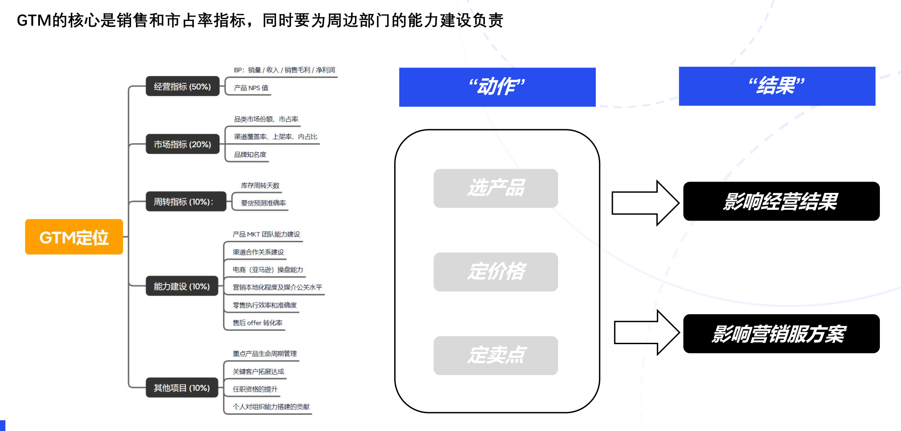

GTM PLAYBOOK / 01
角色认知与经营责任
理解“大脑、浆糊、鞭子”，把动作与经营结果连起来。
定位、角色与职业发展
GTM 是具有拉通属性的资源释放者。手册以 HW 的 2C 业务为背景，描述其从单一产品经营管理到综合品类及区域经营管理的成长路径。
| 角色 | 工作重点 |
|---|---|
| 大脑 | 市场竞争洞察、产品选型决策、资源投入决策、上市方案决策。 |
| 浆糊 | 方向与方案确定后，拉通专业模块，群策群力，输出各领域的上市计划。 |
| 鞭子 | 推动执行，持续跟进未到位的工作，并复盘。 |
| 层级 | 原资料中的职责场景 |
|---|---|
| L1–L2 | 某一国家或省份，单类型产品的经营管理负责人。 |
| L2–L3 | 综合品类产品经营管理主管，或中小型国家分公司总经理。 |
| L4–L6 | 全球品类 GTM 主管，或大国、大省份分公司总经理。 |
为什么 GTM 是“大脑”
首先，在HW的2C领域的销售体系里，GTM属于一线的中台部门，承担销售管理、经营管理的作用。GTM区别于销售(KAM)，有很大的“资源决策权”， 例如产品的价(定价、促销、调价)和量(要货、分货)。
同时，还承担了产品管理的重要功能，例如产品路标管理：决定上什么， 不上什么，什么时候上，在哪个渠道上，什么时候退。
因为与总部对接产品较多，所以也就顺其自然地承担了Product MKT Manager的角色。
正因掌握了”销售管理“和”产品管理“两大核心资源其余的部门:渠道销售、 供应链、营销、零售、售后等部门，都需要配合着GTM的主线节奏，来规划各领域工作重点。
权力越大，责任越大。
管经营就意味着GFK、BP、PSI、经营损益等内外部数据烂熟于心。管产品就意味着要对规格、卖点、竞争、上市操盘方案制定等标准动作游刃有余。
以上工作既疯狂烧脑又考验耐心和沉淀，某种意义上就像行军打仗时的“参谋部”、“参谋长，是负责指挥千军万马的“大脑”
为什么 GTM 是“浆糊”
虽处于一线中台且职能关键，但工作特性决定了它犹如“浆糊”。GTM 部门的工作涉及众多领域的协同与整合，并非单一的、界限分明的任务。
它不像某些专业性极强且工作范畴固定的部门，GTM要将销售管理、产品管理以及与各关联部门如渠道销售供应链、营销、零售、售后等的工作进行融合。
在协调各方资源时，例如在产品上市过程中，它需要与研发部门沟通产品特性以制定合适的营销策略，与供应链部门协调产品供应数量与时间节点，与营销部门确定推广方案，与零售和售后部门规划客户服务支持。
这些工作之间的衔接并非简单的线性关系，而是错综复杂的网状结构，就像浆糊一样，将不同的元素、部门、工作环节混合在一起，不分彼此又相互依存。
GTM 还要处理各种模糊不清的状况，如市场需求的不确定性、竞争对手的突发动作等。
它不能刻板地遵循既定规则，而要灵活地调整策略，如同浆糊可适应各种形状与缝隙，填补工作流程中的空白与不顺畅之处，把看似零散的信息、资源、人力等搅拌融合。
使整个产品上市以及销售运营的过程能够顺利推进，在混乱与秩序之间找到平衡。 所以说它是“浆糊”
用执行力把方案落地
无论是内部组织架构阻碍，还是外部市场变化带来的压力，GTM 都需要推动团队按既定节奏和目标执行，让计划落地。
方案不能停留在 PPT 和口头沟通上。GTM 需要拥有执行力，克服困难和阻碍，把既定方案推动落地。
这个岗位会促使从业者学习各个模块的知识，站在更宏观、成熟的角度推动工作，这也是手册将 GTM 称为“操盘手”的原因。
从工作动作到经营指标
GTM 的核心是销售和市占率指标，同时也要为周边部门的能力建设负责。选产品、定价格、定卖点等动作，会影响经营结果以及营销、服务方案。
| 指标 | 原图权重 | 具体内容 |
|---|---|---|
| 经营指标 | 50% | BP：销量、收入、销售毛利、净利润；产品 NPS 值。 |
| 市场指标 | 20% | 品类市场份额、市占率；渠道覆盖率、上架率、内占比；品牌知名度。 |
| 周转指标 | 10% | 库存周转天数、要货预测准确率。 |
| 能力建设 | 10% | 产品 MKT 团队能力、渠道合作关系、电商（亚马逊）操盘能力、营销本地化及媒介公关水平、零售执行效率和准确度、售后 Offer 转化率。 |
| 其他项目 | 10% | 重点产品生命周期管理、关键客户拓展达成、任职资格提升、对组织能力搭建的贡献。 |

对生命周期的商业成功负责
GTM 牵引核心部门，对每一代产品生命周期的商业成功负责。
- 新品上市：对齐目标、制定预算，实现新品上市的 4P 协同，聚焦资源。
- 中期促销：结合平台促销节奏与玩法，匹配价促和 Offer 策略，让流量与销量协同。
- 老品退市：关注库存风险，避免货物呆滞或长尾销售，及时清理、回款。
- 复盘沉淀：建立自己的操盘数据库，使经验能够随用随取、辅助决策。
| 模块 | 协同内容 |
|---|---|
| 产品 | 市场洞察、产品选型、量价管理、卖点包装。 |
| 渠道 | 渠道拓展、渠道谈判、订单预测、联合营销。 |
| 营销 | 产品卖点与营销包装、传播渠道与转化逻辑。 |
| 促销 | 库存备货、渠道促销日历对齐、O2O 投放计划、销售复盘。 |